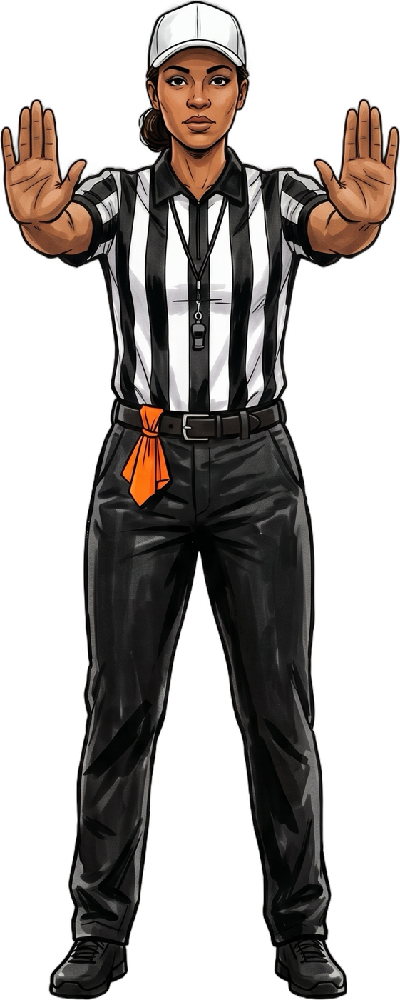

A route tree is a numbered list of the paths a receiver can run. Every route starts with the same straight run up the field, then breaks off in a different direction. In the common tree, odd numbers break toward the sideline, even numbers break toward the middle, and bigger numbers go deeper: 1 flat, 2 slant, 3 comeback, 4 curl, 5 out, 6 dig, 7 corner, 8 post, 9 go.
Your daughter gets in the car after practice, drops her bag, and says, “Coach says I have to know the route tree by Friday.” You nod like you know what that means. Then she asks you to help her study.
If nobody in your family has played football, there's no reason you'd know what a route tree is. The good news: it's a lot simpler than it sounds. By the end of this post, you'll know all nine routes, the one mistake that ruins each one, and how to quiz her on the whole thing in the car.
What a route tree is
A route is the path a receiver runs so the quarterback knows where she'll be. Every route starts the same way: the receiver runs straight up the field. That straight part is called the stem, and it's the trunk of the tree. Then she breaks off in a different direction. Those breaks are the branches.
The routes are numbered 1 through 9, and as the numbers go up, the routes get deeper. Draw all nine from one spot and they look like a tree.
One note before the routes. Teams number their routes differently, so your daughter's coach might call a route by another number. The routes themselves are the same everywhere. The depths below are starting points for a high school girls' team too. If the coach says a different number, go with the coach.
All nine routes
For each route: how deep to run the stem, which way to cut, and the mistake that ruins it. As you read, watch which way each one breaks. There's a pattern, and it's in the next section.
- 1
Flat
- Depth
- 1–2 yards
- Cut
- Turn and run flat toward the sideline. The quickest throw in football.
- Mistake
- Drifting up the field. Stay flat, and turn your head back to the quarterback early. This ball comes fast.
- 2
Slant
- Depth
- 3 hard steps
- Cut
- Sharp 45° cut to the inside, across the defender's face.
- Mistake
- Rounding the cut. A round slant gives the defender time to catch up. Plant the outside foot and snap it.
- 3
Comeback
- Depth
- 10–12 yards
- Cut
- Run like you're going long, then stop, turn toward the sideline and come back toward the ball.
- Mistake
- Stopping and waiting. Keep moving back to the ball after the turn, or the defender jumps in front of you.
- 4
Curl
- Depth
- 8–10 yards
- Cut
- The comeback, flipped. Stop and turn back to the inside, facing the quarterback.
- Mistake
- Stopping right next to a defender. Find the open space between defenders, sit in it, and give the quarterback a big target.
- 5
Out
- Depth
- 5–7 yards
- Cut
- Square 90° cut straight to the sideline.
- Mistake
- Drifting up the field during the cut. The quarterback throws to a spot. Drift, and you're not there when the ball is.
- 6
Dig
Also called an in
- Depth
- 8–10 yards
- Cut
- The out, flipped and a little deeper. Square 90° cut across the middle.
- Mistake
- Rounding it. Make the cut sharp, then keep running across the field. Don't slow down in traffic.
- 7
Corner
- Depth
- 10–12 yards
- Cut
- 45° break toward the back corner of the end zone. That's where the name comes from.
- Mistake
- Leaning early. Run the stem straight, like a post or a go, so the defender can't guess. Then plant hard and break out.
- 8
Post
- Depth
- 10–12 yards
- Cut
- The corner, flipped. 45° break toward the middle of the field, toward the goal post. Coaches may want it skinnier or wider depending on where the safety is.
- Mistake
- Looking for the ball too soon. Win the break first, then look.
- 9
Go
Also called a fly or a fade
- Depth
- All the way
- Cut
- No cut. Straight up the field as fast as you can.
- Mistake
- Slowing down to look for the ball. Get past the defender first, then look up and find it.
The trick to remember all nine
Look at the whole tree again. Every odd number breaks toward the sideline: the flat, the comeback, the out, the corner and the go. Every even number breaks toward the middle: the slant, the curl, the dig and the post.
So if your daughter forgets what a 7 is, she only needs two questions. Odd or even? Seven is odd, so it breaks out. Big number or small? Seven is big, so it's deep. A deep route that breaks out: that's the corner.

Eight is even, so it breaks in, toward the middle. Eight is big, so it's deep. A deep route that breaks in is the post.
What's different in flag
Most route tree guides are written for tackle football. Flag football has its own rules, and four of them change how your daughter runs routes.
- 1Nobody can jam you at the line. A defender can't start contact with a receiver, so she gets a clean start on every play. Use it: explode off the line. Rule 9-2-3
- 2Everyone is an eligible receiver. All seven players can catch a pass, so any player on the field might run any of these routes. 7-5-6
- 3There's only one forward pass, and it has to be thrown from behind the line. No second throw down the field. The route she runs is the play. 7-5-1
- 4The field may only be marked every 20 yards. On a lot of flag fields, there's no line at 5 or 10 yards to tell her when to cut. Counting steps in practice teaches her where 5 yards is without looking down. 1-2-3
And one more: pass interference goes both ways. If a receiver pushes off a defender to get open, that's a foul on her team. 7-5-10

Pass interference
Both arms pushed forward, palms out. It applies to receivers too.
Why routes have numbers
The numbered route tree is usually credited to Don Coryell, who coached at San Diego State and then the San Diego Chargers. Numbering the routes made the playbook easier to learn. Players learn nine routes once, and every pass play is just those routes put together: one receiver runs a 6, another runs a 2, another runs a 9.
So when your daughter learns the route tree, she isn't memorizing one play. She's learning the pieces of every play in the playbook.
Quiz her in the car
Here's a five-minute way to help her study before Friday:
- 1Say a number. She says the route's name, then which way it breaks.
- 2Say a route name. She gives you the number, using the odd-out, even-in trick to check herself.
- 3Ask for the mistake. “What ruins a slant?” Rounding the cut.
- 4Last, ask her to draw the whole tree on a napkin, from the 1 to the 9.
If her coach uses different numbers, swap in the coach's. The routes, and the mistakes, stay the same.

Every rule in the game, illustrated.
The four flag rules in this post come from the 2026–27 NFHS rule book. Girls Flag Football, Illustrated explains every one of them, rule by rule, with field diagrams and all 38 referee signals.
Rule references are to the 2026–27 NFHS Flag Football Rules, written here in plain words. Route names, numbers and depths are coaching conventions, not rules, and they vary by team. Not affiliated with or endorsed by the NFHS. Always check your state association's adoptions.